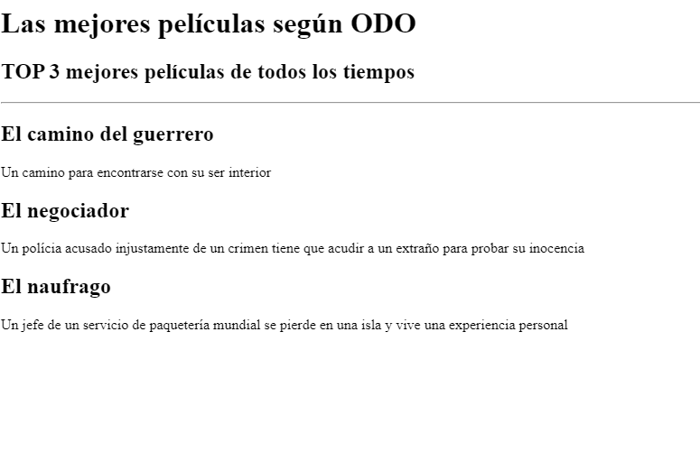
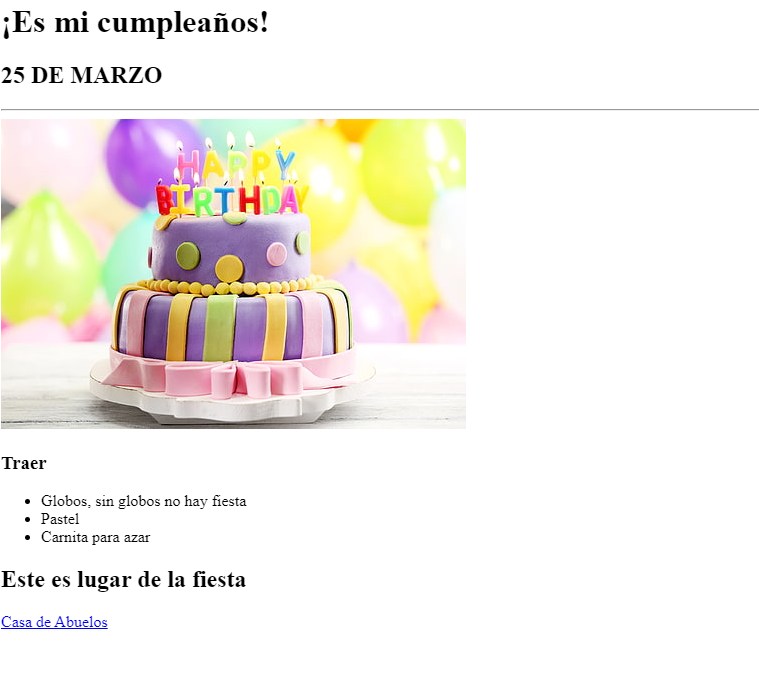

Portafolio ODO
Proyecto: TOP 3 BEST MOVIES ALL TIME

Ir al sitio del proyecto Top 3 Best movies
Proyecto de fase inicial que simula un sitio de las mejores películas según el autor
Proyecto: Tarjeta de Invitación

Ir al sitio del proyecto Tarjeta de invitación
Proyecto que genera una tarjeta de invitación con un enlace a google maps
Contacto
Acerca